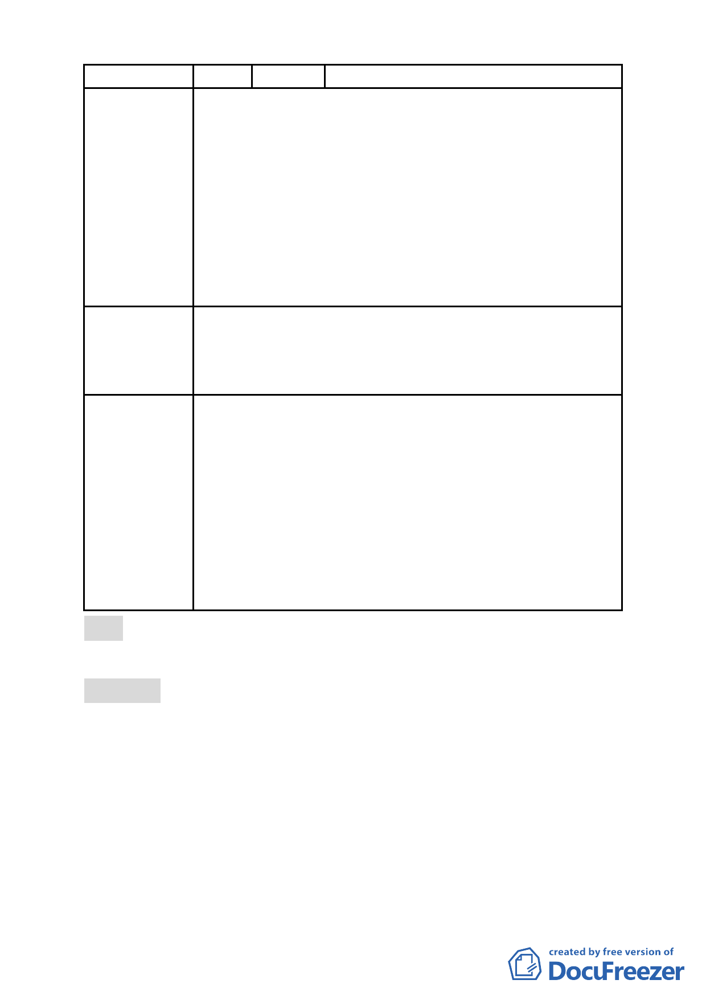

問股份有限公司
1. 建議放寬建築物高度限制以不超過 100 公尺為原則。
2. 建議放寬允許使用組別中，作為住宅使用之容積樓地板
面積不得超過申請基地總容積樓地板面積(包括獎勵容
積)二分之一以上。
3. 本區高度不宜設限，方能建構出具有變化之天際線效
陳 情 理 由 果，且高度拉高將可相對留設大面積之開放空間，有助
於全區發展。
4. 為避免本區目前商業及辦公市場不彰，如硬性規定做商
業使用比例過高，恐造成大量閒置空間，將影響本地區
發展及形成浪費。
1. 建議放寬建築高度限制，以不超過航空管制為原則。
2. 建議放寬允許使用項目中，作為住宅使用之容積樓地板
建 議 辦 法 面積不得超過申請基地總容積樓地板面積(包含獎勵容
積)二分之一以上。
委員會決議
一、大彎北段地區係屬「2010 年臺北好好看」之科技產業
軸帶，基於其規劃理念係為提供產業進駐誘因、帶動
城市發展活力，故區內「2010 年臺北好好看」申請案
之「土地使用」部分，其因申請好好看所獲容積獎勵
部分同意得比照商三所允許之使用項目，惟不得作住
宅之使用；至於其餘部分仍應依本區 92 年都市計畫之
規定辦理，不得作住宅之使用。
二、有關臺北好好看申請案之建築物高度管制部分，經委
員會決議採不記名投票方式表決結果為「建築高度 70
公尺（上限）、視覺廊道 40 公尺（下限）」。
貳、本次會議因時間已晚，其餘提案八、提案九留待下次委員會
議討論。
叁、散會（18：40）
- 62 -